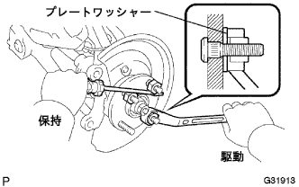

Round axle hub bolt LH installation |
| 1. Lonxle hub bolt LH installation |
Pass a new hub bolt through the axle hub from the dust cover and natsukuru notes.
|  |
Pass the nut (M12 x P1.5mm) through the plate watsya as shown in the figure to the new hub bolt.
| 2. Installation of the front disc |
| 3. Front Dicek Brake Kiki ASSY LH Installation |
 |
Attach the Daisk Brake Kiki ASSY to the steering knuckle with two bolts.
| 4. Installation of front tires |